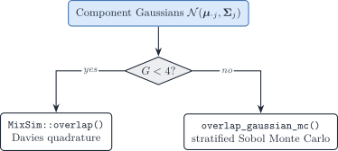

4.2 Distances, overlap, and covariance information
2026-10-30
Source:vignettes/04-2-distances-overlap-metrics.qmd
This note collects the component-separation scores used in synthetic scenario descriptors and the covariance-driven factorial (§2.3). The scores describe the J purified Gaussians \mathcal{N}(\boldsymbol{\mu}_{\cdot j},\boldsymbol{\Sigma}_j) that enter the convolution, not the deconvolution estimator.
Notation (shared by all vignettes; aligned with the article)
Gene g=1,\ldots,G; cell type j=1,\ldots,J (a second type is \ell); bulk sample i=1,\ldots,N; reference donor (replicate) r=1,\ldots,R; cell c, with C_j reference cells of type j. The index i is dropped inside a derivation and restored in the model statements.
Symbol Meaning y_{gi}, \boldsymbol{y}_{\cdot i} Bulk expression on a linear scale m_{ji}, n_i=\sum_jm_{ji} Cells of type j in bulk sample i, and their total \tilde{\boldsymbol{y}}_{\cdot i}=\boldsymbol{y}_{\cdot i}/n_i Bulk expression per cell \boldsymbol{p}_{\cdot i}\in\Delta^{J-1} Cell fractions, p_{ji}=m_{ji}/n_i \boldsymbol{\rho}_{i}\in\mathbb{R}^{J-1} Isometric log-ratio (ILR) coordinates of \boldsymbol{p}_{\cdot i}, \boldsymbol{p}_{\cdot i}=\operatorname{softmax}(\mathbf{V}\boldsymbol{\rho}_i) with a Helmert basis \mathbf{V} \boldsymbol{q}_{\cdot i} Transcript fractions, q_{ji}=p_{ji}S_j/\sum_\ell p_{\ell i}S_\ell \boldsymbol{\mu}_{\cdot j}, \boldsymbol{\Sigma}_j Mean and G\times G gene–gene covariance of a type-j population profile \boldsymbol{\Omega}_j=\boldsymbol{\Sigma}_j^{-1} Precision matrix of type j \boldsymbol{\Gamma}_g J\times J covariance across cell types for gene g ( bMIND,EPIC-unmix,Unico)\boldsymbol{x}_{\cdot j,i} Purified profile of type j in sample i x_{gc}, \boldsymbol{x}_{\cdot c}, s_c Raw UMI count of gene g in reference cell c, and the size factor of cell c \boldsymbol{\lambda}_{\cdot c}, \boldsymbol{z}_{\cdot c} Size-free expression of cell c; its latent log-expression in the Poisson log-normal (PLN) model \tilde{\boldsymbol{\mu}}_{\cdot j}=C_j^{-1}\sum_{c\in j}\boldsymbol{x}_{\cdot c}=S_j\boldsymbol{\theta}_{\cdot j} Per-cell mean of the raw UMI counts of the C_j reference cells of type j \boldsymbol{\theta}_{\cdot j}, S_j=\mathbf{1}^{\top}\tilde{\boldsymbol{\mu}}_{\cdot j} Relative abundance (\mathbf{1}^{\top}\boldsymbol{\theta}_{\cdot j}=1) and mean transcriptome size of a type-j cell \boldsymbol{\Sigma}_{W,j}, \boldsymbol{\Sigma}_{B,j} Within-donor cell-to-cell covariance of type j (one single-cell sample); between-donor covariance of type j (needs R\ge2 donors) \boldsymbol{S}_W(\boldsymbol{v})=\sum_jv_j\boldsymbol{\Sigma}_{W,j}, \boldsymbol{S}_B(\boldsymbol{v})=\sum_jv_j^2\boldsymbol{\Sigma}_{B,j} Linear and quadratic covariance mixtures with weights \boldsymbol{v} \boldsymbol{V}_j Empirical covariance of type j, computed from its reference profiles or cells \boldsymbol{R}_j Empirical correlation matrix of type j (bold; the scalar R is the number of donors) \boldsymbol{\Delta}_j=\operatorname{diag}(\boldsymbol{V}_j) Diagonal matrix of the empirical variances of type j \lambda Penalty of a regularised covariance or precision estimator \psi_g, \mathcal{D}_g Negative binomial dispersion of gene g; deviance of gene g in a count model \delta_{gj} Detection rate of gene g in type j (fraction of cells with a non-zero count) \varpi_{\ell\mid j}, \varpi_{j\ell}, \bar\varpi MixSim overlap: probability of misclassifying a draw of j into \ell, pairwise overlap \varpi_{j\ell}=\varpi_{\ell\mid j}+\varpi_{j\mid\ell}, and its average over pairs ( BarOmega)\boldsymbol{T}_{ji}=\sum_{c=1}^{m_{ji}}\boldsymbol{X}_{jic} Total expression contributed by type j to sample i a_i Sample-wide scale between the reference and the bulk library c_i=a_in_i, \phi_i=a_i^2n_i Mean scale and variance scale of the single-cell model b_g, \tilde b_g=b_g^{\mathrm{bulk}}/b_g^{\mathrm{ref}} Capture efficiency of gene g in one protocol, and the gene-wise platform ratio; \tilde{\boldsymbol{B}}=\operatorname{diag}(\tilde{\boldsymbol{b}}) \boldsymbol{D}_i Diagonal, heteroscedastic bulk measurement noise A tilde marks a quantity rescaled to a reference unit: per cell (\tilde{\boldsymbol{y}}, \tilde{\boldsymbol{\mu}}) or relative to the reference protocol (\tilde{\boldsymbol{b}}). \boldsymbol{\Sigma}_j couples genes within one cell type; \boldsymbol{\Gamma}_g couples cell types within one gene. A symbol absent from this table is defined in the vignette that uses it, with one meaning there.
Overlap, total variation, and MixSim
Pairwise MixSim overlap is the sum of two Bayes misclassification probabilities (Maitra and Melnykov 2010; Melnykov et al. 2012). For components j\neq\ell with weights \pi_j,\pi_\ell and densities f_j,f_\ell,
\varpi_{\ell\mid j} = \Pr_{X\sim f_j}\bigl(\pi_\ell f_\ell(X)>\pi_j f_j(X)\bigr), \qquad \varpi_{j\ell} = \varpi_{\ell\mid j}+\varpi_{j\mid\ell}. \tag{1}
BarOmega, written \bar\varpi, is the unweighted mean of \varpi_{j\ell} over j<\ell. The FSDA implementation of the same construction (MixSim help; source pointer; (Riani et al. 2015)) targets average overlap, not the maximum. DeCovarT follows that choice.
The histogram similarity (density overlap) of two laws P,Q is
\operatorname{OVL}(P,Q) = \int \min\{f_P,f_Q\}\,\mathrm{d}\nu = 1-\operatorname{TV}(P,Q), \tag{2}
with total variation \operatorname{TV}=\tfrac12\int\lvert f_P-f_Q\rvert\,\mathrm{d}\nu (Nielsen and Sun 2018). For two equal-weight Gaussians the MixSim pairwise overlap \varpi_{j\ell} equals \operatorname{OVL} and therefore 1-\operatorname{TV}. Unequal \boldsymbol{\pi} replace f_j by \pi_j f_j in the MAP rule, so the identity is then approximate.
Bayes error in the equal-prior two-class problem is P_e=\tfrac12(1-\operatorname{TV})=\tfrac12\operatorname{OVL}.
Hellinger, Bhattacharyya, and Fisher–Rao
Hellinger distance H_2(f,g)=H_2(g,f) is a metric on densities. For Gaussians it has a closed form through the Bhattacharyya coefficient \mathrm{BC}=\int\sqrt{fg} (Hellinger distance; Bhattacharyya properties). The package stores the unweighted pairwise mean as hellinger; hellinger_weighted reweights by p_j p_k (a prevalence weight, not a directed divergence).
On the unit interval H\in[0,1] with H^2=1-\mathrm{BC}, Hellinger and total variation satisfy (connection with TV)
H^2 \le \operatorname{TV} \le H\sqrt{2-H^2}. \tag{3}
Because \operatorname{OVL}=1-\operatorname{TV}, those inequalities reverse for overlap. Locally, Hellinger is equivalent to the Fisher–Rao metric on parametric families. For univariate normals the Fisher information metric is \mathrm{d}s^2=\mathrm{d}\mu^2/\sigma^2+2(\mathrm{d}\sigma/\sigma)^2 (normal distribution). For covariances at equal means that geodesic coincides (up to scale) with the affine-invariant Riemannian metric of Sec. 3.
Jeffreys (symmetrised KL) remains a supplementary descriptor (compute_average_jeffreys()): it is not bounded and is not a metric.
Affine-invariant Riemannian distance
The space of symmetric positive-definite (SPD) matrices is a curved cone. The affine-invariant Riemannian metric (AIRM) distance
d_R(A,B) = \bigl\lVert \log\bigl(A^{-1/2}BA^{-1/2}\bigr) \bigr\rVert_F = \Bigl(\sum_g \log^2\lambda_g(A^{-1}B)\Bigr)^{1/2} \tag{4}
is congruence-invariant (d_R(XAX^{\mathsf{T}},XBX^{\mathsf{T}})=d_R(A,B)) and inversion-invariant (d_R(A^{-1},B^{-1})=d_R(A,B)). The geodesic stays inside the SPD cone; the distance to a singular matrix is infinite.
We do not use the Frobenius chord \lVert A-B\rVert_F. That Euclidean metric treats SPD matrices as a flat vector space, is not inversion-invariant, can interpolate off the cone (negative eigenvalues), and produces the swelling effect (determinants of midpoints larger than both endpoints). compute_average_riemannian() implements only AIRM. The descriptor column riemannian_sigma is the unweighted mean of d_R(\Sigma_j,\Sigma_\ell) over j<\ell. The distance is scale-invariant: d_R(sA,sB)=d_R(A,B). In fig03 it therefore tracks the shape of the completed graphs, not the overlap knob s.
Computing overlap in moderate dimension
MixSim::overlap() evaluates the exact pairwise misclassification integrals by Davies’ algorithm for linear combinations of chi-squares (Maitra and Melnykov 2010). That quadrature scales poorly with the gene dimension G. compute_average_overlap() therefore uses Davies for G<4 and stratified Sobol Monte Carlo otherwise.
MixSim / FSDA (exact, G<4)
For G\in\{1,2,3\} DeCovarT calls MixSim::overlap() and returns BarOmega (the unweighted mean of the J(J-1)/2 pairwise overlaps \varpi_{j\ell}). The MixSim generator MixSim() can simulate mixtures with a prescribed average overlap (CRAN MixSim) but it draws unconstrained means and covariances. It cannot keep the structural zeros of a graph-constrained precision. Fig03 therefore does not call MixSim() as a generator; it only matches BarOmega after the graph is fixed (Sec. 5).
Stratified Sobol Monte Carlo (G\ge 4)
overlap_gaussian_mc() estimates \varpi_{\ell\mid j} by drawing B points from each component (default B=10\,000), then comparing log-densities under the two-class MAP rule. Two devices are stacked, and they do different jobs:
- Sobol fills the unit cube (0,1)^G more evenly than i.i.d. uniforms (low-discrepancy / quasi-Monte Carlo). It is still a sample in the uniform cube, not a Gaussian sample.
- Inverse-transform sampling then maps each coordinate u_g\mapsto\Phi^{-1}(u_g) and left-multiplies by the Cholesky factor of \Sigma_j, so the image is exactly \mathcal{N}(\boldsymbol{\mu}_{\cdot j},\boldsymbol{\Sigma}_j). Without that map, Sobol points would not have the right Gaussian law.
The remaining implementation details are precomputed Cholesky factors, log-density evaluation, and stratification by component (not draws from the mixture). When G\ge 4, compute_average_overlap() emits a cli note and uses this estimator. Hellinger of the purified Gaussians remains a cheap closed-form descriptor, not a MixSim BarOmega substitute.

Figure 1: Routes to MixSim-style average overlap. Exact Davies quadrature is used only for G < 4; otherwise stratified Sobol Monte Carlo.
Fig03: topology fixed, overlap as the knob
The covariance-driven script scripts/fig03_variance_covariance_driven.R still draws one sparse graph per cell type (scale-free or cluster SBM on the mean-collinear types; type 3 held at scale-free). After SPD completion, each \Sigma_j is replaced by s\Sigma_j. Then \Omega_j(s)=\Omega_j/s: every structural zero is preserved. Larger s inflates the Gaussians, raises MixSim BarOmega, and raises the covariance-information fraction f_{\mathrm{cov}} (mean Fisher scales as 1/s; the whitened Frobenius covariance block is scale-invariant). See the tangent-Fisher callout in scenario descriptors.
scale_covariances_to_overlap() binary-searches s so that BarOmega at the balanced composition matches a target in \{\text{low},\text{moderate},\text{high}\}. That is the graph-constrained analogue of MixSim / FSDA average-overlap simulation: topology is an experimental factor; overlap is a second, stronger predictor of deconvolution error when means are collinear.
See also
- Scenario descriptors: How to build synthetic scenarios
- Covariance-driven factorial: §2.3
- Feature-selection overlap monitors: Appendix S6